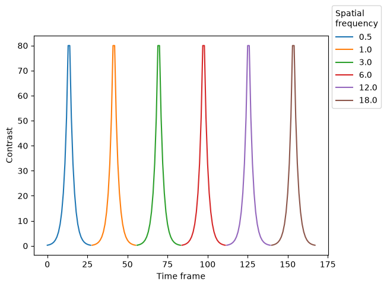
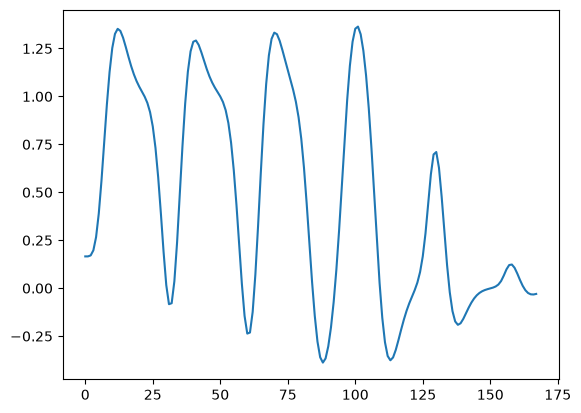
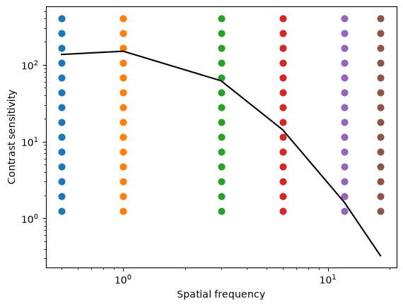
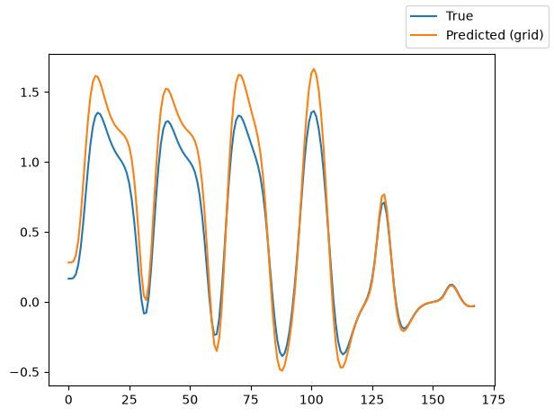
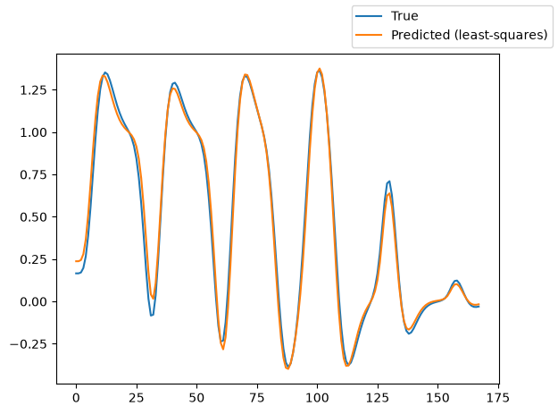
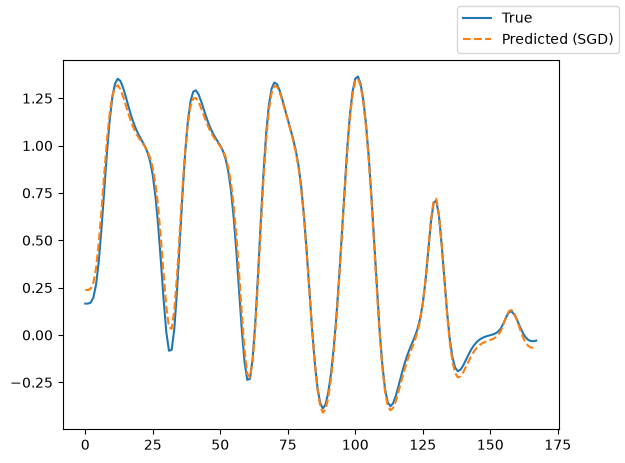
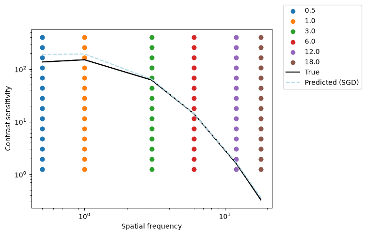

How to fit a contrast sensitivity model to simulated data¶
Author: Malte Lüken (m.luken@esciencecenter.nl)
Difficulty: Beginner
This tutorial explains how to fit a neural contrast sensitivity function (CSF) model to simulated data.
The CSF defines the relationship between contrast sensitivity and spatial frequency. It describes the lowest perceivable contrast as a function of spatial frequency and can be used so detect deficits in visual function. Traditionally, the CSF has been used in psychophysics, but it can also be translated to neuroimaging data by estimating CSF responses from neuron populations (see Roelofzen et al., 2025). The workflow for estimating neural CSF models is similar to the estimation of population-receptive field (pRF) models.
Because prfmodel uses Keras for model fitting, we need to make sure that a backend is installed before we begin. In this tutorial, we use the TensorFlow backend.
import os
from importlib.util import find_spec
# Set keras backend to 'tensorflow' (this is normally the default)
os.environ["KERAS_BACKEND"] = "tensorflow"
# Hide tensorflow info messages
os.environ["TF_CPP_MIN_LOG_LEVEL"] = "1"
if find_spec("tensorflow") is None:
msg = "Could not find the tensorflow package. Please install tensorflow with 'pip install .[tensorflow]'"
raise ImportError(msg)
Defining the stimulus¶
Let’s start with the first step: Defining the stimulus. In practice, we recommend that users save the stimulus they use in an experiment to a file and load it to avoid mismatches between experiment and analysis.
Because we use simulated data in this tutorial, we create a new stimulus using the CSFStimulus class. Our stimulus
includes all combiations of 6 unique spatial frequencies and 14 unique contrast levels. The contrast increases
from 0.25 to 80 (in c/degree) and then decreases back to 0.25 on a log scale.
import numpy as np
from prfmodel.stimuli import CSFStimulus
# Spatial frequencies
sf_levels = np.array([0.5, 1.0, 3.0, 6.0, 12.0, 18.0])
# Contrast levels on log scale
contrast_levels = np.logspace(np.log10(0.25), np.log10(80), 14)
contrast_levels = np.concatenate([contrast_levels, np.flip(contrast_levels)])
contrast, sf = np.meshgrid(contrast_levels, sf_levels)
stimulus = CSFStimulus(
sf=sf.ravel(),
contrast=contrast.ravel(),
)
print(stimulus)
CSFStimulus(sf=array[168], contrast=array[168])
WARNING: All log messages before absl::InitializeLog() is called are written to STDERR
I0000 00:00:1786609937.791180 4445 cudart_stub.cc:31] Could not find cuda drivers on your machine, GPU will not be used.
WARNING: All log messages before absl::InitializeLog() is called are written to STDERR
I0000 00:00:1786609939.046184 4445 cudart_stub.cc:31] Could not find cuda drivers on your machine, GPU will not be used.
When printing the stimulus object, we can see that it has two attributes. The sf attribute defines the spatial frequencies.
It has shape (num_frames,). The contrast attribute defines the contrast for each spatial frequency with shape (num_frames,).
We can visualize the stimulus by plotting the contrast over time for each spatial frequency.
from prfmodel.plotting import plot_csf_stimulus_design
plot_csf_stimulus_design(stimulus);

Defining the CSF model¶
Now that we defined our stimulus, we can create a CSF model to predict a neural response to this stimulus in our (hypothetical) region of interest (e.g., V1). We use the CSF model described in Roelofzen et al. (2025) that assumes an asymmetric log-parabolic CSF combine with a Naka-Rushton contrast response function. The model response is convolved with an impulse response that follows the shape of the hemodynamic response in the brain. Finally, a baseline and amplitude parameter shift and scale our predicted response to the simulated (or observed) neural response.
The CSFModel class performs all these steps to make a combined prediction.
from prfmodel.models.csf import CSFModel
csf_model = CSFModel()
To simulate a neural response to our stimulus with our CSF model, we need to define a set of parameters.
The list of parameters that need to be set to make model predictions can be obtained from the parameter_names property.
csf_model.parameter_names
['cs_peak',
'sf_peak',
'width_r',
'slope_crf',
'weight_deriv',
'baseline',
'amplitude']
The parameters cs_peak and sf_peak define the peak contrast sensitivity and spatial frequency of the CSF while
width_r describes the width of the CSF for spatial frequencies above the peak (the right side of the CSF). The parameter
slope_crf describes the shape of the contrast response.
The two-gamma impulse parameters (delay, dispersion, undershoot, u_dispersion, ratio) default to the Glover HRF parameter set (see default_two_gamma_impulse_glover_hrf()), so we only set weight_deriv here. The parameters baseline and amplitude shift and scale our convolved response, respectively. We store the parameter values in a pandas.DataFrame object.
import pandas as pd
true_params = pd.DataFrame(
{
"cs_peak": [150.0],
"sf_peak": [1.0],
"width_r": [1.3],
"slope_crf": [1.5],
# delay, dispersion, undershoot, u_dispersion, and ratio use the default Glover HRF parameters
"weight_deriv": [-0.5],
"baseline": [0.0],
"amplitude": [1.0],
},
)
Using the “true” parameters, we simulate a response to our stimulus by making a prediction with our CSF model.
import matplotlib.pyplot as plt
simulated_response = csf_model(stimulus, true_params)
_ = plt.plot(simulated_response[0])
E0000 00:00:1786609940.772961 4445 cuda_platform.cc:52] failed call to cuInit: INTERNAL: CUDA error: Failed call to cuInit: UNKNOWN ERROR (303)

We can see that the simulated response contains a peak for each spatial frequency and that the peaks for the frequencies
that are further away from the peak frequency (sf_peak = 1) become increasingly smaller.
We can predict the CSF from our true CSF model parameters.
from prfmodel.models.csf import predict_contrast_sensitivity
simulated_csf = np.asarray(predict_contrast_sensitivity(
sf=stimulus.sf,
cs_peak=true_params[["cs_peak"]],
sf_peak=true_params[["sf_peak"]],
width_l=0.68,
width_r=true_params[["width_r"]],
))
We can plot the true CSF against the contrast sensitivity and spatial frequencies of our stimulus.
from prfmodel.plotting import plot_csf_stimulus_curve
plot_csf_stimulus_curve(stimulus, simulated_csf);

We can see that the peak contrast sensitivity is indeed around cs_peak = 150 and the peak spatial frequency at
sf_peak = 1. We can also confirm this numerically.
# Print the peak contrast sensitivity and the peak spatial frequency
simulated_csf.max(), stimulus.sf[simulated_csf.argmax()]
(149.99997, 1.0)
Fitting the CSF model¶
We will fit the pRF model to our simulated data using multiple stages. We begin with a grid search to find good
starting values for our parameters of interest (cs_peak, sf_peak, width_r, and slope_crf). Then, we use least squares to estimate the baseline and amplitude of
our model. Finally, we use stochastic gradient descent (SGD) to finetune our model fits.
Let’s start with the grid search by defining ranges of cs_peak, sf_peak, width_r, and slope_crf that we want to construct a grid
of parameter values from. For all other parameters, we only provide a single value so that they will stay constant
across the entire grid.
import numpy as np
param_ranges = {
"cs_peak": np.linspace(0, 200, 10),
"sf_peak": np.linspace(0, 6, 10),
"width_r": np.linspace(0.5, 2.5, 10),
"slope_crf": np.linspace(0, 5, 10),
"weight_deriv": [-0.5],
"baseline": [0.0],
"amplitude": [1.2],
}
For all three parameters, we defined ranges of 10 values that will be used to construct the grid. That is, the grid search will evaluate all possible combinations of these values and return the combination that fits the simulated data best. This will result in a grid containing \(10^4\) parameter combinations.
Let’s construct the GridFitter and perform the grid search. Note that we set chunk_size=20 to let the GridFitter
evaluate 20 parameter combinations at the same time (which saves us some memory).
from prfmodel.fitters import GridFitter
grid_fitter = GridFitter(
model=csf_model,
stimulus=stimulus,
)
grid_history, grid_params = grid_fitter.fit(
data=simulated_response,
parameter_values=param_ranges,
batch_size=20,
)
grid_params
| cs_peak | sf_peak | width_r | slope_crf | weight_deriv | baseline | amplitude | |
|---|---|---|---|---|---|---|---|
| 0 | 200.0 | 0.666667 | 1.166667 | 1.666667 | -0.5 | 0.0 | 1.2 |
We can see that the estimates for cs_peak, sf_peak, width_r, and slope_crf are one combination in our grid. However, because the
grid did not contain the “true” parameters we used to simulate the original response, the estimates differ from the
“true” parameters.
Using the parameter estimates resulting from the grid search we can make model predictions and compare them against the original simulated response.
grid_pred_response = csf_model(stimulus, grid_params)
fig, ax = plt.subplots()
ax.plot(simulated_response[0], label="True")
ax.plot(grid_pred_response[0], label="Predicted (grid)")
fig.legend();

We can see that the predicted response follows the shape of the original (true) response but still shows some deviation in the amplitude of the activation peaks and the baseline activation.
Using least squares, we can estimate the baseline and amplitude parameters of our model.
from prfmodel.fitters import LeastSquaresFitter
ls_fitter = LeastSquaresFitter(
model=csf_model,
stimulus=stimulus,
)
ls_history, ls_params = ls_fitter.fit(
data=simulated_response,
parameters=grid_params,
slope_name="amplitude", # Names of parameters to be optimized with least squares
intercept_name="baseline",
)
ls_params
| cs_peak | sf_peak | width_r | slope_crf | weight_deriv | baseline | amplitude | |
|---|---|---|---|---|---|---|---|
| 0 | 200.0 | 0.666667 | 1.166667 | 1.666667 | -0.5 | 0.006022 | 0.986536 |
Looking at the parameters, we can see that the model compensates the deviation in the peaks by adjusting the
baseline and amplitude parameters. We can also plot the predicted response.
ls_pred_response = csf_model(stimulus, ls_params)
fig, ax = plt.subplots()
ax.plot(simulated_response[0], label="True")
ax.plot(ls_pred_response[0], label="Predicted (least-squares)")
fig.legend();

To finetune our model fits, we use SGD to iteratively optimize model parameters using the gradient of a loss function that is computed between data and model predictions. The default loss function in prfmodel is the means squared error. As initial parameters, we use the result from the grid search and least squares fit. We fix the parameters related to the impulse response to their initial values (which are the “true” values).
from prfmodel.fitters import SGDFitter
sgd_fitter = SGDFitter(
model=csf_model,
stimulus=stimulus,
)
sgd_history, sgd_params = sgd_fitter.fit(
data=simulated_response,
init_parameters=ls_params,
fixed_parameters=["delay", "dispersion", "undershoot", "u_dispersion", "ratio", "weight_deriv"],
num_steps=500,
)
We can compare the SGD parameters against the true parameters.
sgd_params
| cs_peak | sf_peak | width_r | slope_crf | weight_deriv | baseline | amplitude | |
|---|---|---|---|---|---|---|---|
| 0 | 199.480438 | 0.803545 | 1.227244 | 1.426376 | -0.5 | -0.025949 | 1.022582 |
true_params
| cs_peak | sf_peak | width_r | slope_crf | weight_deriv | baseline | amplitude | |
|---|---|---|---|---|---|---|---|
| 0 | 150.0 | 1.0 | 1.3 | 1.5 | -0.5 | 0.0 | 1.0 |
We can see that they match quite closely. We also can plot the predicted model response and see that it matches the original simulated response almost perfectly.
sgd_pred_response = csf_model(stimulus, sgd_params)
fig, ax = plt.subplots()
ax.plot(simulated_response[0], label="True")
ax.plot(sgd_pred_response[0], "--", label="Predicted (SGD)")
fig.legend();

We can also plot the alignment of the predicted CSF with the true CSF.
predicted_csf_sgd = np.asarray(predict_contrast_sensitivity(
sf=stimulus.sf,
cs_peak=sgd_params[["cs_peak"]],
sf_peak=sgd_params[["sf_peak"]],
width_l=0.68,
width_r=sgd_params[["width_r"]],
))
fig, ax = plot_csf_stimulus_curve(stimulus, simulated_csf)
ax.loglog(stimulus.sf, simulated_csf.squeeze(), color="black", label="True")
ax.loglog(stimulus.sf, predicted_csf_sgd.squeeze(), "--", color="lightblue", label="Predicted (SGD)")
fig.legend(bbox_to_anchor=(1.2, 1));

Conclusion¶
In this tutorial, we showed how to setup a CSF model. We demonstrated how to fit the model to simulated data (without noise) using a multi-stage workflow: First, we used a grid search to find good starting values, then, we estimated baseline and amplitude using least squares, and finally we finetuned the model fit using stochastic gradient descent. At each stage, we compared the predicted model response against the original simulated response and CSF to check how well the model fit the data.
Stay Tuned¶
More tutorials on fitting models to empirical data and creating custom models are in the making.
For questions and issues, please make an issue on GitHub or contact Malte Lüken (m.luken@esciencecenter.nl).
References¶
Roelofzen, C., Daghlian, M., van Dijk, J. A., de Jong, M. C., & Dumoulin, S. O. (2025). Modeling neural contrast sensitivity functions in human visual cortex. Imaging Neuroscience, 3, imag_a_00469. https://doi.org/10.1162/imag_a_00469